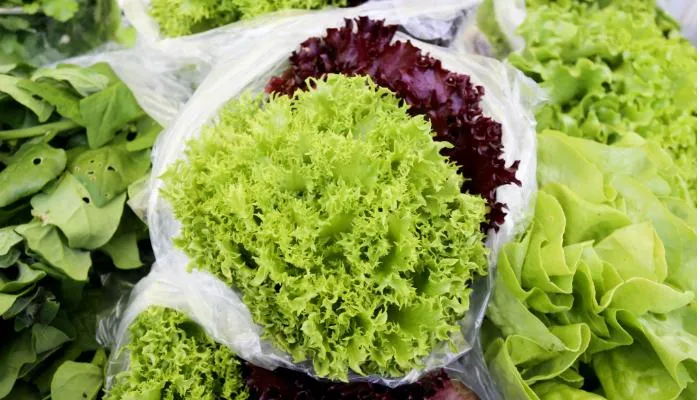
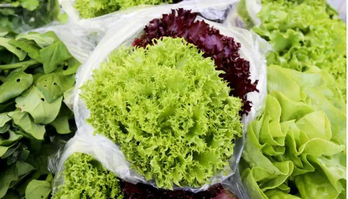

Conectando o Campo e a Cidade
Descubra como os sabores do campo paranaense enriquecem a vida na cidade. Este projeto explora a origem dos alimentos, receitas tradicionais e a presença dos produtos rurais nos centros urbanos do Paraná.
O Paraná é um dos maiores produtores agrícolas do Brasil, com uma diversidade impressionante de culturas e produtos. Da soja ao café, das frutas às hortaliças, o estado alimenta não apenas sua população, mas contribui significativamente para a segurança alimentar do país e do mundo.
Neste projeto, celebramos essa relação de interdependência e valorizamos o trabalho dos agricultores paranaenses que, com suas mãos calejadas, cultivam os alimentos que chegam à nossa mesa todos os dias.
Agricultura Sustentável
Práticas que respeitam o meio ambiente e garantem o futuro
Alimentos Saudáveis
Produtos frescos e nutritivos direto do campo
Comércio Justo
Valorização do trabalho dos produtores rurais

Paraná Agrícola
O Paraná é um dos estados mais importantes para a agricultura brasileira, destacando-se na produção de grãos, proteína animal, hortifrutigranjeiros e diversos outros produtos.
Norte
Principais produtos: Café, cana-de-açúcar, laranja, milho
Destaque: Londrina e Maringá formam um importante polo agroindustrial
Noroeste
Principais produtos: Mandioca, cana-de-açúcar, laranja, bovinos
Destaque: Maior produção de mandioca do estado
Oeste
Principais produtos: Soja, milho, aves, suínos
Destaque: Cascavel é um dos maiores polos agroindustriais do país
Sudoeste
Principais produtos: Leite, soja, milho, frutas
Destaque: Forte presença da agricultura familiar
Centro-Sul
Principais produtos: Batata, feijão, trigo, cevada
Destaque: Guarapuava é referência na produção de malte para cervejarias
Campos Gerais
Principais produtos: Soja, milho, trigo, cevada, leite
Destaque: Ponta Grossa é um importante centro logístico agrícola
Litoral
Principais produtos: Banana, palmito, mandioca, pesca
Destaque: Produção de orgânicos e agricultura sustentável
Principais Produtos Agrícolas
Soja
19,8 milhões de toneladas/ano
Milho
14,5 milhões de toneladas/ano
Trigo
3,4 milhões de toneladas/ano
Frango
4,2 milhões de toneladas/ano
Leite
4,3 bilhões de litros/ano
Mandioca
3,2 milhões de toneladas/ano

Do Campo à Mesa
Conheça o caminho que os alimentos percorrem desde as fazendas paranaenses até chegar à sua mesa. Cada etapa é fundamental para garantir alimentos frescos, seguros e nutritivos.
Plantio e Cultivo
No Paraná, o plantio segue um calendário agrícola específico para cada região. Os agricultores utilizam técnicas avançadas de plantio direto, que preservam o solo e aumentam a produtividade. O estado é referência em agricultura de precisão, com uso de GPS, drones e sensores para otimizar o uso de recursos.
Colheita
A colheita no Paraná é altamente mecanizada para grãos como soja, milho e trigo. Já produtos como frutas, verduras e legumes são frequentemente colhidos manualmente para preservar sua integridade. O estado conta com uma das maiores frotas de máquinas agrícolas do país.
Processamento
O Paraná possui um forte parque agroindustrial, com cooperativas e empresas que processam os alimentos próximo às áreas de produção. A Coamo, maior cooperativa da América Latina, e a C.Vale são exemplos de sucesso no processamento de grãos e proteínas.
Transporte e Distribuição
O sistema logístico paranaense inclui rodovias, ferrovias e o Porto de Paranaguá, um dos principais do país para exportação de grãos. Para produtos que abastecem o mercado interno, as Centrais de Abastecimento do Paraná (Ceasa) em Curitiba, Londrina, Maringá, Cascavel e Foz do Iguaçu são fundamentais.
Comercialização
Os produtos chegam aos consumidores através de feiras do produtor, mercados municipais, supermercados e programas institucionais como o PNAE (Programa Nacional de Alimentação Escolar) e PAA (Programa de Aquisição de Alimentos), que compram diretamente da agricultura familiar.
Consumo Consciente
O consumidor paranaense tem valorizado cada vez mais os produtos locais, orgânicos e da agricultura familiar. Iniciativas como o selo "Produto do Paraná" ajudam a identificar e valorizar os alimentos produzidos no estado.
Você sabia?
O Paraná possui mais de 305 mil estabelecimentos agropecuários, sendo que 80% deles são de agricultura familiar. Esses pequenos produtores são responsáveis por grande parte dos alimentos que chegam à mesa dos paranaenses todos os dias!
Produtores Paranaenses
Conheça alguns dos produtores rurais que abastecem as cidades paranaenses com alimentos frescos e de qualidade. Suas histórias de dedicação e amor pela terra inspiram nossa conexão com o campo.

Família Tanabe
Hortaliças Orgânicas
Descendentes de japoneses, a família Tanabe cultiva hortaliças orgânicas há três gerações em Morretes, no litoral paranaense. Sua propriedade de 5 hectares é certificada para produção orgânica e abastece restaurantes e feiras em Curitiba e região metropolitana.
"Nosso compromisso é com a saúde da terra e das pessoas. Cada vegetal que cultivamos leva um pouco da nossa história e do nosso cuidado."

Cooperativa Witmarsum
Laticínios e Grãos
Fundada por imigrantes menonitas em 1952, a Cooperativa Witmarsum é referência na produção de laticínios de alta qualidade. Localizada em Palmeira, nos Campos Gerais, reúne mais de 200 famílias produtoras que mantêm vivas as tradições europeias na fabricação de queijos e derivados.
"Nossa cooperativa une tradição e inovação. Preservamos técnicas centenárias, mas investimos em tecnologia para garantir produtos de excelência."

Família Kohatsu
Frutas e Café
No Norte do Paraná, a família Kohatsu se destaca na produção de frutas e café especial. Com 30 hectares em Assaí, eles cultivam uvas finas, morangos e café arábica de altitude, utilizando técnicas sustentáveis e inovadoras.
"O segredo está no respeito aos ciclos naturais e na paixão pelo que fazemos. Cada fruta que produzimos carrega o sabor da nossa terra vermelha."
dos alimentos consumidos no Paraná vêm da agricultura familiar
mil estabelecimentos agropecuários no estado
do PIB paranaense vem do agronegócio
Receitas Típicas
O Paraná possui uma culinária rica e diversificada, influenciada por imigrantes europeus, indígenas e tropeiros. Conheça algumas receitas tradicionais que utilizam ingredientes locais.

Barreado
Ingredientes:
- 2 kg de carne bovina (patinho ou coxão mole)
- 200g de toucinho
- 2 cebolas grandes picadas
- 6 dentes de alho amassados
- 4 folhas de louro
- 1 colher de sopa de cominho
- 2 colheres de sopa de colorau
- Sal e pimenta a gosto
- Farinha de mandioca para acompanhar
- Banana e laranja para acompanhar
Modo de Preparo:
- Corte a carne em cubos grandes e tempere com alho, sal e pimenta.
- Em uma panela de barro (tradicionalmente), coloque o toucinho, a cebola, o cominho, o colorau e as folhas de louro.
- Adicione a carne temperada e cubra com água.
- Tampe a panela com uma folha de bananeira (ou papel alumínio) e depois com a tampa.
- Vede bem as bordas com uma massa feita de farinha de trigo e água (barreamento).
- Cozinhe em fogo baixo por aproximadamente 8 horas.
- Sirva com farinha de mandioca, banana e laranja.
Curiosidade:
O Barreado é um prato típico do litoral paranaense, especialmente das cidades de Morretes, Antonina e Paranaguá. Sua origem remonta ao período colonial e está ligado às festividades do carnaval. O nome vem da técnica de "barrear" (vedar com barro) a tampa da panela para não deixar o vapor escapar.
Pierogi
Ingredientes da Massa:
- 3 xícaras de farinha de trigo
- 1 ovo
- 1 colher de sopa de óleo
- 1 pitada de sal
- 1 xícara de água morna
Ingredientes do Recheio:
- 500g de batata cozida e amassada
- 250g de requeijão ou ricota
- 1 cebola média picada e refogada
- Sal e pimenta a gosto
Modo de Preparo:
- Para a massa, misture todos os ingredientes até obter uma massa lisa e homogênea.
- Deixe a massa descansar por 30 minutos coberta com um pano.
- Enquanto isso, prepare o recheio misturando todos os ingredientes.
- Abra a massa com um rolo até ficar fina e corte em círculos de aproximadamente 7cm de diâmetro.
- Coloque uma porção de recheio no centro de cada círculo.
- Dobre ao meio formando uma meia-lua e aperte bem as bordas para fechar.
- Cozinhe em água fervente com sal até que flutuem (cerca de 3-4 minutos).
- Sirva com manteiga derretida e cebola frita por cima.
Curiosidade:
O pierogi é um prato de origem polonesa muito popular no Paraná devido à forte imigração polonesa no estado, especialmente na região de Curitiba. Cada família tem sua receita tradicional, e existem variações de recheio como repolho, carne e até mesmo doces com frutas.
Pinhão na Chapa com Mel de Abelhas Nativas
Ingredientes:
- 1 kg de pinhão fresco
- Água para o cozimento inicial
- Sal grosso a gosto
- 100g de manteiga
- 100ml de mel de abelhas nativas (jataí ou mandaçaia)
- Canela em pó para polvilhar
Modo de Preparo:
- Lave bem os pinhões e faça um pequeno corte na casca de cada um para evitar que estourem durante o cozimento.
- Cozinhe os pinhões em água com sal por cerca de 20 minutos na panela de pressão.
- Escorra e deixe esfriar um pouco até que seja possível descascá-los.
- Descasque os pinhões, mantendo-os inteiros.
- Em uma chapa ou frigideira grande, derreta a manteiga em fogo médio.
- Adicione os pinhões descascados e doure por alguns minutos, virando ocasionalmente.
- Regue com o mel e polvilhe canela, misturando bem para caramelizar.
- Sirva quente como sobremesa ou aperitivo.
Curiosidade:
O pinhão é a semente da Araucária, árvore símbolo do Paraná. A colheita ocorre entre abril e junho, e seu consumo é parte importante da cultura paranaense. O mel de abelhas nativas, como a jataí, é produzido em diversas regiões do estado e possui propriedades medicinais além do sabor único.
Calendário Sazonal Paranaense
Consumir alimentos da estação é mais saudável, econômico e sustentável. Confira o que está no auge da safra em cada período do ano no Paraná.
Verão (Dezembro a Março)
Frutas
- Abacaxi
- Acerola
- Ameixa
- Carambola
- Goiaba
- Manga
- Maracujá
- Melancia
- Pêssego
Legumes
- Abobrinha
- Berinjela
- Milho Verde
- Pepino
- Pimentão
- Quiabo
- Tomate
Verduras
- Alface
- Almeirão
- Couve
- Rúcula
- Salsa
Outono (Março a Junho)
Frutas
- Abacate
- Caqui
- Jaca
- Kiwi
- Maçã
- Pera
- Uva
Legumes
- Abóbora
- Batata-doce
- Cará
- Inhame
- Mandioca
Verduras
- Acelga
- Brócolis
- Couve-flor
- Escarola
- Repolho
Destaque da Estação: Pinhão
O pinhão é a semente da Araucária, árvore símbolo do Paraná. Rico em carboidratos, proteínas e minerais como potássio e fósforo. A colheita ocorre entre abril e junho, principalmente na região Sul e Centro-Sul do estado.
Dica de consumo: Além de cozido ou assado na chapa, o pinhão pode ser usado em paçocas, sopas, farofas e até mesmo em risoto.
Inverno (Junho a Setembro)
Frutas
- Laranja
- Limão
- Mexerica
- Morango
- Tangerina
Legumes
- Alho-poró
- Batata
- Cenoura
- Ervilha
- Nabo
Verduras
- Agrião
- Chicória
- Couve-de-bruxelas
- Espinafre
- Mostarda
Primavera (Setembro a Dezembro)
Frutas
- Abacaxi
- Banana
- Jabuticaba
- Mamão
- Melão
Legumes
- Beterraba
- Cebola
- Cenoura
- Rabanete
- Vagem
Verduras
- Alface
- Couve
- Rúcula
- Salsão
- Salsinha
Benefícios de consumir alimentos da estação:
Mais Sabor
Alimentos colhidos no ponto certo de maturação têm sabor mais intenso e autêntico.
Mais Nutrientes
Frutas e verduras da estação contêm mais vitaminas e minerais.
Menor Preço
A abundância da safra faz com que os preços sejam mais acessíveis.
Menos Agrotóxicos
Alimentos da estação geralmente necessitam de menos defensivos agrícolas.
Menor Impacto Ambiental
Redução na necessidade de transporte, refrigeração e estufas.
Apoio ao Produtor Local
Fortalece a economia local e valoriza o trabalho dos agricultores da região.
Feiras e Mercados do Paraná
Conheça os principais pontos de venda direta de produtos rurais nas cidades paranaenses, onde você pode encontrar alimentos frescos diretamente dos produtores.
Mercado Municipal de Curitiba
Segunda a sábado, das 8h às 18h | Domingo, das 8h às 13h
Av. Sete de Setembro, 1865 - Centro, Curitiba
Inaugurado em 1958, o Mercado Municipal de Curitiba é um dos pontos turísticos mais tradicionais da capital paranaense. Com mais de 200 lojas, oferece uma grande variedade de produtos frescos, incluindo frutas, verduras, carnes, queijos, vinhos, especiarias e produtos típicos do Paraná.

Feira do Produtor de Maringá
Terças e sextas, das 16h às 21h
Av. Prudente de Morais, s/n - Zona 7, Maringá
A Feira do Produtor de Maringá reúne mais de 100 produtores rurais da região, oferecendo produtos frescos diretamente do campo. É conhecida pela qualidade das frutas, verduras, queijos, doces caseiros e comidas típicas.
 

Feira de Londrina
Domingos, das 7h às 12h
Av. Saul Elkind - Conjunto Maria Cecília, Londrina
A Feira de Londrina é uma das maiores do Norte do Paraná, reunindo produtores de toda a região. Destaca-se pela diversidade de produtos, incluindo café especial, frutas da estação e produtos da agroindústria familiar.

Feira do Pequeno Produtor de Cascavel
Quartas e sábados, das 6h às 12h
Rua Fortunato Bebber, 987 - Pacaembu, Cascavel
Localizada no Oeste do Paraná, a Feira do Pequeno Produtor de Cascavel reúne agricultores familiares que comercializam produtos frescos e processados. A região é conhecida pela forte produção de grãos, aves e suínos, refletindo na diversidade de produtos oferecidos.


Feira Verde de Ponta Grossa
Terças, quintas e sábados, das 7h às 12h
Praça Barão do Rio Branco - Centro, Ponta Grossa
A Feira Verde de Ponta Grossa é um projeto que incentiva a produção e o consumo de alimentos orgânicos e agroecológicos. Localizada nos Campos Gerais, a feira reúne produtores certificados que oferecem alimentos livres de agrotóxicos e produzidos com respeito ao meio ambiente.


Galeria de Sabores
Imagens que capturam a beleza dos alimentos do campo paranaense e a riqueza da cultura rural.

Colheita Matinal
Colheita de verduras frescas nas primeiras horas do dia em Colombo, região metropolitana de Curitiba

Cores da Feira
A diversidade de cores e aromas nas bancas da feira de Maringá

Mãos que Criam
Artesanato que preserva tradições rurais em Prudentópolis

Saberes Ancestrais
Preparo de alimentos com técnicas tradicionais em comunidade faxinalense

Terra Fértil
Plantação sustentável respeitando os ciclos naturais em Toledo

Mesa Farta
Mesa posta com os sabores autênticos do campo paranaense
Ouro Verde
Plantação de café no Norte do Paraná, região de Londrina
Tesouro da Araucária
Colheita tradicional de pinhão na região de Guarapuava
Sabores do Campo na Cidade
O projeto "Sabores do Campo na Cidade" foi desenvolvido como parte do Projeto Agrinho 2025, com o objetivo de valorizar a conexão entre o campo e a cidade, destacando a importância da agricultura paranaense para a alimentação e a economia do estado.
Através deste site, buscamos mostrar a jornada dos alimentos desde a produção até o consumo, valorizando o trabalho dos agricultores e incentivando o consumo consciente de produtos locais e sazonais.
Este projeto é uma iniciativa educacional que visa aproximar os estudantes da realidade do campo, promovendo valores como sustentabilidade, respeito ao meio ambiente e valorização da cultura rural.
Equipe do Projeto
Vinicius Bonifácio
Desenvolvimento e Conteúdo
Professor Alessandro
Orientação e Coordenação
Colégio Estadual Dr. Décio Dossi
Este projeto foi desenvolvido pelo aluno do Colégio Estadual Dr. Décio Dossi de Fazenda Rio Grande, como parte do Projeto Agrinho 2025.
Sobre o Projeto Agrinho
O Projeto Agrinho é uma iniciativa do Sistema FAEP/SENAR-PR que existe há mais de 25 anos, sendo o maior programa de responsabilidade social do Sistema FAEP. Anualmente, alcança mais de 1 milhão de crianças em todo o Paraná, trabalhando temas como cidadania, saúde, meio ambiente e agricultura sustentável.
Em 2025, o tema central "Festejando a Conexão Campo Cidade" celebra a relação de interdependência entre os ambientes rural e urbano, destacando como o campo paranaense alimenta as cidades e como as cidades fornecem tecnologia, serviços e mercado para o campo.